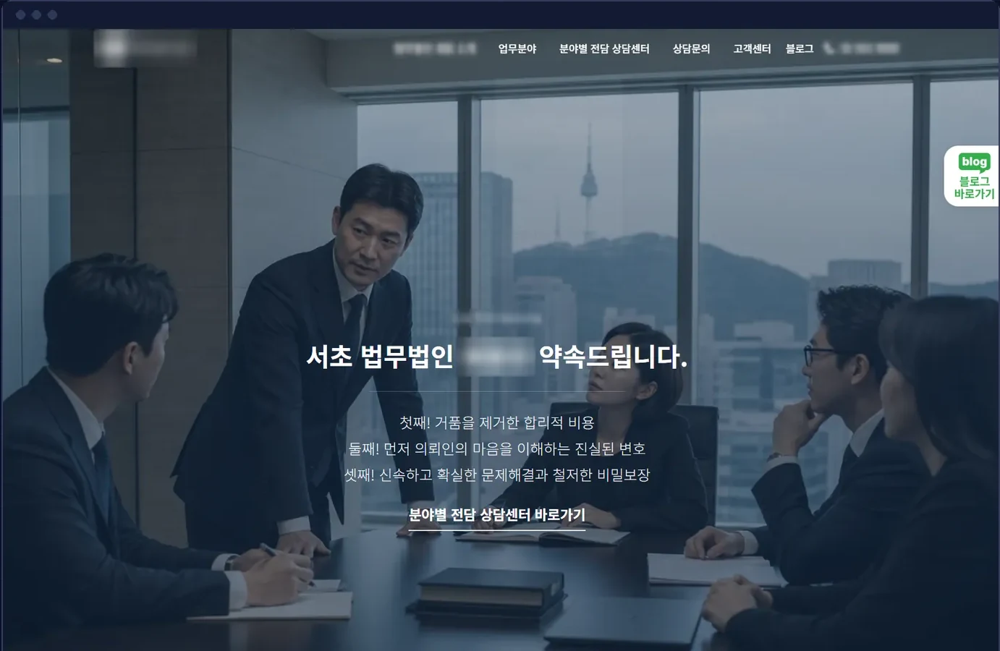
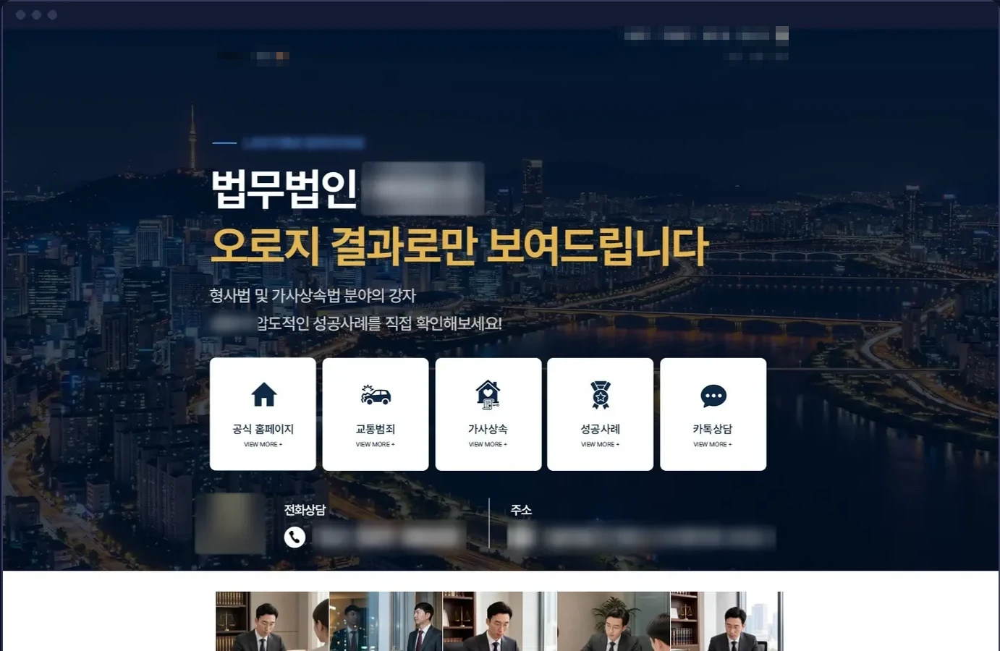
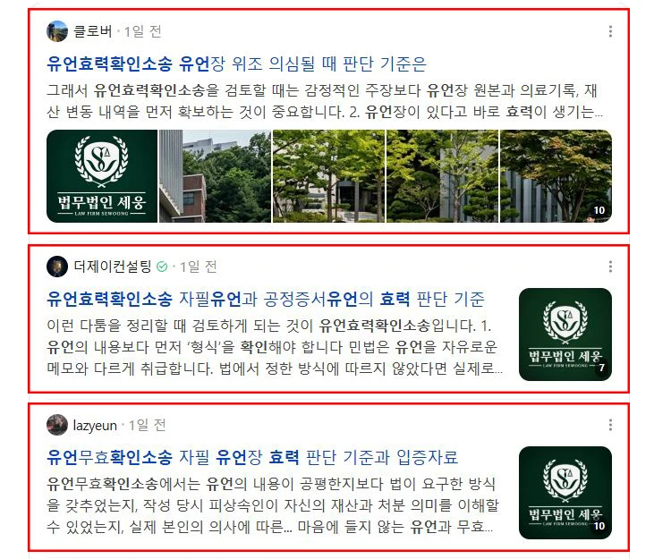
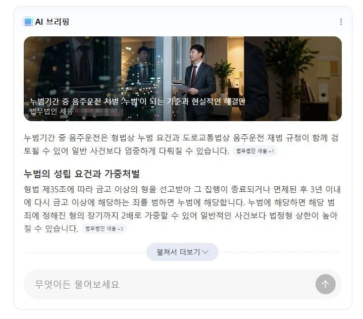
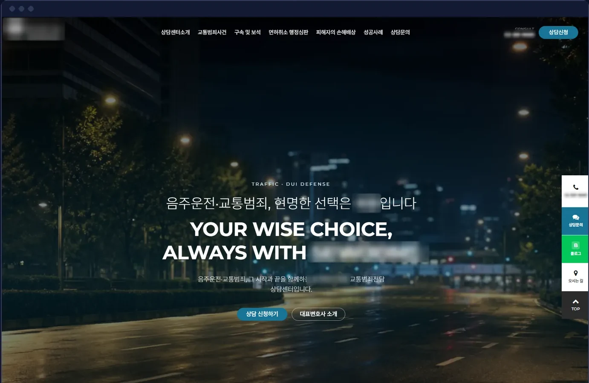
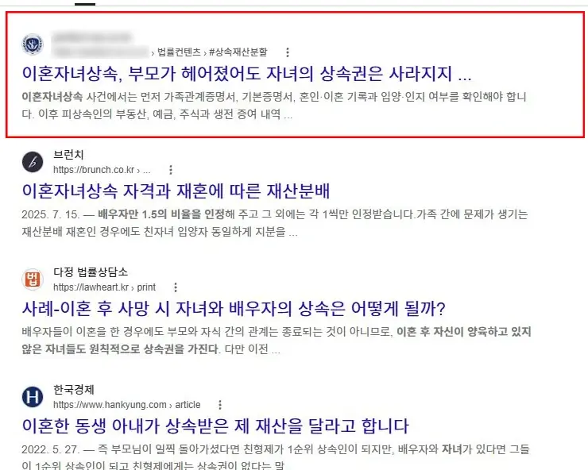
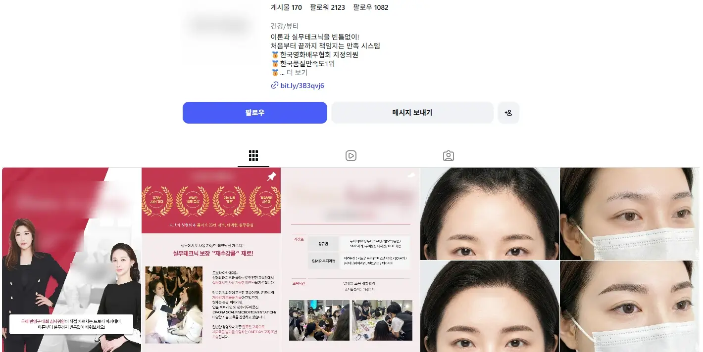
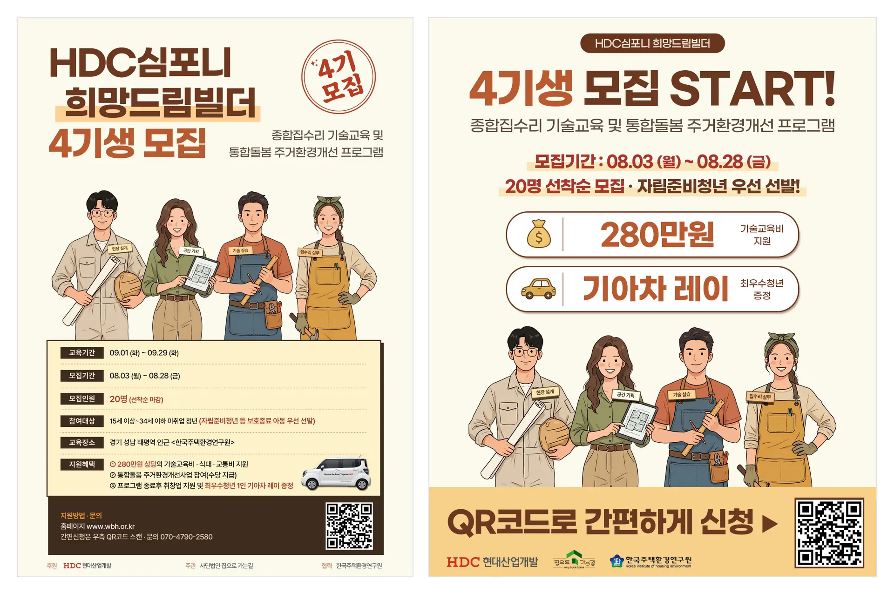

KEYWORDMASTER월간 리포트
이번 달 성과 · 상태
- 노출→ 유지
- 클릭↑ 개선
- 문의 행동● 다음 달 집중
- 실제 문의 · 계약함께 확인
다음 달클릭이 문의로 이어지는 상담 동선을 먼저 개선
02Problem
우리 회사에 해당되는 항목을 눌러 보세요.
예를 들어 업체가 4곳이면, 기준도 4개, 보고서도 4장입니다.
| 영역 | 업체 | 성과 기준 |
|---|---|---|
| 검색광고 | A사 | 클릭 수 |
| SNS 광고 | B사 | 도달 |
| 블로그 | C사 | 발행 건수 |
| 홈페이지 | D사 | 납품 |
| 상담 문의 | 없음 | 알 수 없음 |
03Services
대표님들이 자주 물어보시는 질문에, 키워드마스터가 직접 답했습니다.
“검색하면 우리가 먼저 나올 수 있나요?”
네. 검색하는 순간, 가장 먼저 보이게 합니다.
“광고비 없이도 검색 결과에 나올 수 있나요?”
네. 검색 결과에 자연스럽게 나오도록 만듭니다.
“ChatGPT 같은 AI 답변에도 나올 수 있나요?”
네. AI가 우리 회사를 소개하도록 준비합니다.
“지도 검색에서도 눈에 띌 수 있나요?”
네. 지도 검색에서 먼저 보이도록 정리합니다.
“블로그 글을 맡길 수 있나요?”
네. 믿음이 가는 글을 꾸준히 발행합니다.
“기사나 입소문으로도 알릴 수 있나요?”
네. 기사와 후기로 신뢰를 쌓습니다.
“유튜브 같은 영상 광고도 되나요?”
네. 영상 기획부터 광고 집행까지 맡습니다.
“홈페이지를 새로 만들 수도 있나요?”
네. 들어온 고객이 바로 문의하게 만듭니다.
“인스타그램 광고도 해 주시나요?”
네. 우리 고객이 될 사람에게만 보이게 합니다.
“그럼 이걸 다 하려면,
업체를 여러 곳 써야 하지 않나요?”
아닙니다.
키워드마스터 한 곳이면
충분합니다.
전담 매니저가 전략과 데이터로 9개 분야를 함께 운영합니다.
04How
고객이 브랜드를 찾고, 고르고, 연락하는 흐름을 만들고, 매달 결과를 측정해 개선합니다.
01
찾게 하다
02
고르게 하다
03
연락하게 하다
04
나아지게 하다
노출, 클릭, 문의 행동, 실제 문의와 계약 순서로, 매출에 가까운 숫자일수록 중요하게 봅니다. 매달 측정한 결과로 다시 FIND 단계부터 개선합니다.
KEYWORDMASTER월간 리포트
이번 달 성과 · 상태
다음 달클릭이 문의로 이어지는 상담 동선을 먼저 개선
05Work
무엇을 만들었는지보다, 무엇이 달라졌는지를 보여드립니다.
주소 **lawfirm.co.kr

상담 전환 +160%
상담까지 이어지는 동선을 중심으로 홈페이지를 다시 설계해, 방문자가 상담 신청으로 넘어오는 비율을 끌어올렸습니다.
키워드마스터에 맡겨주신 제작 사례 화면입니다.
주소 blog.****.com/****

블로그 유입 2.4배
분야별로 고객이 실제 검색하는 질문에 맞춰 글을 다시 기획해, 블로그로 들어오는 방문자가 꾸준히 늘었습니다.
키워드마스터에 맡겨주신 제작 사례 화면입니다.
검색어 유언효력확인소송

통합검색 상위노출
검색 로직을 정밀하게 분석하고 고객별 콘텐츠 구조를 설계해, 하나의 주제를 다양한 방식으로 확장하며 통합검색 상위 영역을 확보했습니다.
N사 통합검색 화면
검색어 누범기간중 음주운전

AI 브리핑 인용 노출
AI 검색 로직에 맞춰 콘텐츠를 구조화하고 인용 가능성을 높여, AI 브리핑의 대표 출처로 노출시켰습니다.
N사 AI 브리핑 화면
주소 **center.co.kr

월 문의 2.5배
고객의 검색 의도에 맞춰 상담 전환에 최적화된 랜딩페이지를 설계하고, 월 문의를 2.5배로 끌어올렸습니다.
키워드마스터에 맡겨주신 제작 사례 화면입니다.
검색어 이혼자녀상속

구글 검색 상위노출
상속 관련 정보와 비용 안내, 상담 신청까지 자연스럽게 이어지는 전문 홈페이지를 설계하고, SEO 최적화를 통해 구글 상위 노출을 이끌었습니다.
구글 검색 화면
해시태그 강남반영구

월 도달 2.7배
브랜드 톤에 맞춰 교육 과정과 시술 결과 콘텐츠를 일관되게 기획·운영해, 월 도달을 2.7배까지 끌어올렸습니다.
인스타그램 계정 화면
해시태그 자립준비청년

목표 대비 모집 225%
자립준비청년과 기술을 배우려는 청년에게 닿도록 광고 대상과 메시지를 맞춰, 한 달 만에 목표의 두 배가 넘는 인원을 모집했습니다.
인스타그램 광고 이미지
06Start
한 가지부터 시작해도 됩니다.
필요할 때 같은 전략 안에서 확장합니다.
예시: 1개월차에 검색광고로 시작하고, 3개월차에 블로그, 5개월차에 홈페이지를 더해 계속 함께 운영합니다. 실제 범위와 순서는 상담으로 결정됩니다.
1주차
지금 문의가 어디서 오는지
현황 진단
2주차→ 3주차 실행
무엇부터 고쳐야 하는지
우선순위 작업 목록
4주차첫 달 끝
한 달 동안 무엇이 달라졌는지
첫 월간 리포트
카드 속 화면은 예시 양식입니다
2개월차부터매달 리포트 → 개선을 반복합니다
다음 단계첫 달 계획, 무료 상담에서 함께 세워 드립니다무료 상담 받기
07FAQ
네. 검색광고 하나만 맡기셔도 됩니다. 다만 성과는 검색에서 상담까지 전체 흐름으로 보고, 필요한 단계가 보이면 그때 제안드립니다.
채널마다 따로 보던 목표와 데이터가 하나로 연결됩니다. 예를 들어 검색광고에서 반응이 좋은 키워드를 SEO와 콘텐츠에 반영하고, 홈페이지에서 확인한 전환 데이터를 다시 광고 운영에 활용합니다. 한 채널의 결과가 다른 채널을 개선하는 근거가 됩니다.
광고주입니다. 계약이 끝나면 그대로 가져가십니다.
약정 없이 1개월 단위입니다. 첫 달은 세팅 중심이라, 성과는 2~3개월 흐름으로 보시길 권합니다.
맡기시는 범위에 따라 상담 후 안내드립니다. 광고비와 운영비는 나눠서 보여드립니다.
신청서를 검토한 뒤, 영업일 기준 1일 안에 연락드립니다. 상담은 무료입니다.
08Contact
신청서를 검토한 뒤, 영업일 기준 1일 안에 연락드리겠습니다. 상담은 무료입니다.
입력하신 정보는 상담 목적으로만 사용합니다.